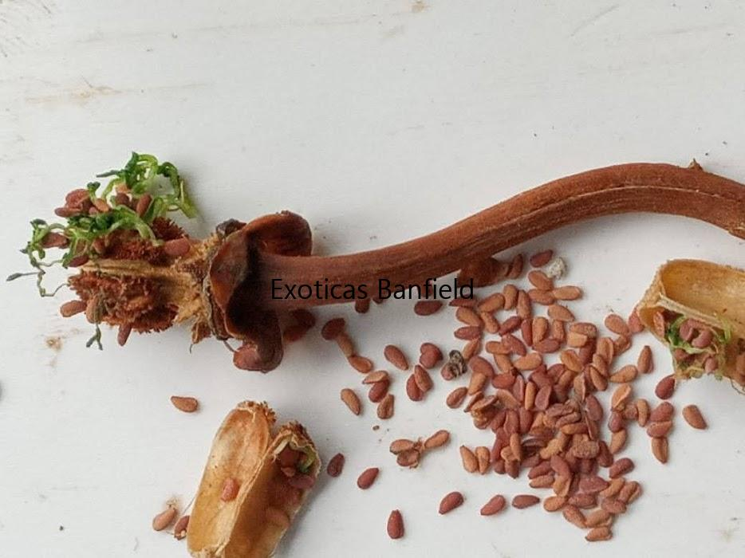
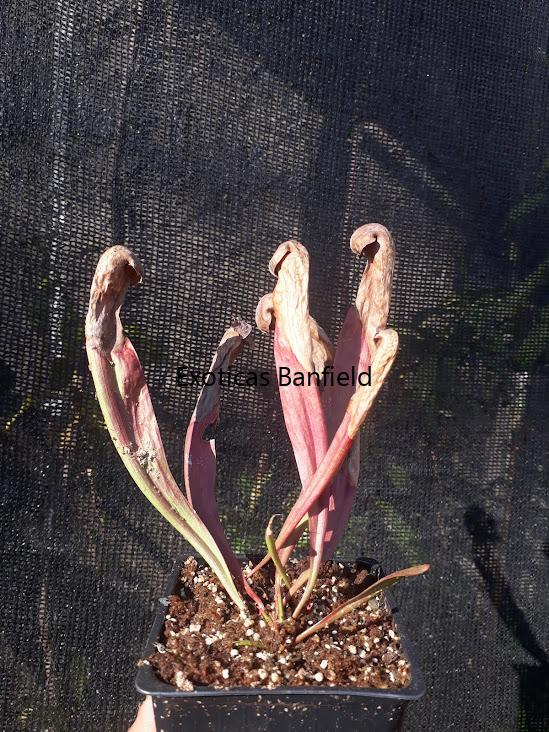
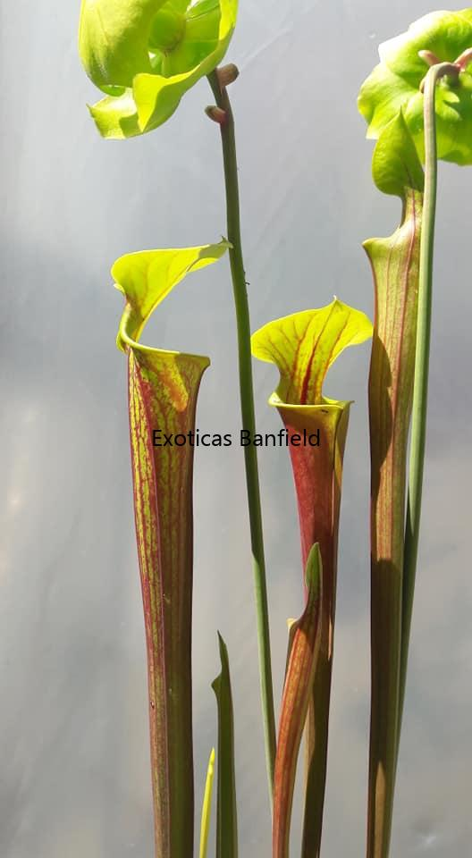

Sarracenia
Habitat Natural
Ubicación : Crece Naturalmente en los pantanos y ciénagas del sureste y noreste de los Estados Unidos y Canadá.
Condiciones : Crece en condiciones extremas, con alta humedad con inviernos muy frios
Entorno : Suelen ser lugares a cielo abierto , cerca de cursos de agua
Descripcion
Forma: Poseen hojas modificadas en forma de jarros o trompetas que están adaptadas para capturar y digerir insectos. Estas jarras están rodeadas de un "capuchón" que ayuda a atraer y atrapar a las presas.
Tamaño
Tamaño máximo: Varía según la especie En promedio, las jarras pueden medir entre 15 y 70 cm de largo. Algunas especies pueden crecer aún más, hasta 1 metro en casos excepcionales.
Método de Captura - Pasivo
Mecanismo: Trampas en forma de jarra llenas de líquido digestivo. Las hojas atraen a los insectos con su néctar y colores vivos. Una vez dentro, los insectos resbalan por las paredes lisas de la jarra y caen en el líquido digestivo, donde son descompuestos y absorbidos por la planta.
Curiosidad: Algunos llamas "trompeta" a sus trampas por el sonido que suele escucharse entre primavera y verano cuando los insectos voladores intentan salir de sus trampas .
Temperatura
Rango natural: En su hábitat natural, las temperaturas suelen estar por debajo de los 0ºC hasta los 35ºC.
Tolerancia: Tolera muy bien el clima argentino
Precauciones: Durante épocas calurosas, es importante mantener la planta fresca,con agua y de ser necesario protegerla del sol directo cuando las temperaturas superen los 35ºC.
Humedad
Nivel de humedad: Vive en ambientes muy húmedos, pero en general, tolera una humedad ambiental entre el 50% y el 80%.En Buenos Aires se desarrollan perfectamente en exterior.
Riego
Agua: Solo se debe utilizar agua destilada o de lluvia. Llenar la bandeja con 1 a 2 cm de agua para macetas pequeñas; en macetas más grandes, aumentar un poco más la cantidad.
Estaciones: El riego varía según la estación:
Primavera/Verano:Mantener el suelo siempre húmedo con agua en la bandeja . Se puede dejar la bandeja seca si el sustrato está húmedo, pero no dejar que se seque por completo .
Otoño/Invierno: Regar solo cuando sea necesario, manteniendo el sustrato húmedo sin dejar agua en la bandeja.
Floracion
Ciclo: Florecen luego de 3 a 4 años de edad, a comienzos de primavera . Las flores son grandes y coloridas con diversas alturas . Suelen salir mucho antes que las trampas.
Flores: Produce un racimo largo de hasta 40 cm con una flor unica por tallo floral .Los colores varian y suelen ser rojas , amarillas , rosadas o incluso una mezcla de colores .Son muy vistosas y luego de la polinizacion pierden sus petalos para generar el fruto . Sus frutos maduran a los 3 meses.
Trasplantes
Época: Se aconseja realizarlo a finales de invierno o comienzos de la primavera.Transplantes fuera de esta epoca afectarian al crecimiento de la planta.
Motivo: Principalmente, cuando la maceta actual se ha quedado pequeña para la planta o cuando una maceta más grande podría proporcionar un entorno más estable para las raíces o por motivos de sustrato contaminado .
Iluminación
Prefieren la iluminación directa del sol esto influye en el color de las trampas.
Exterior: Minimo 4 hs de sol diaria
Interior: Colocar junto a una ventana con demasiada luz y, si es necesario, complementar con iluminación artificial.No es recomendable tenerlas en interior
Problemas de luz: Si falta luz, las hojas se alargan y se debilitan, doblándose fácilmente. Aumentar la iluminación si esto sucede.
Sustrato
Requerimientos: Necesita tierra ácida y sin nutrientes. Los sustratos más usados son una mezcla de turba rubia y perlita o musgo de sphagnum y perlita, en proporciones 50/50, 60/40 o 70/30.
Resultados: Se obtienen mejores resultados con musgo de sphagnum y perlita con un riego moderado .
Hibernación
Hibernación: Desde mediados de otoño hasta principios de primavera. Durante este período, la planta comienza a secar sus trampas para conservar energía. En primavera, renace poco a poco. Es importante controlar el riego para evitar hongos.
Alimentación
Dieta: Se alimenta de cualquier insecto que entre en sus trampas. No requiere alimentación manual, pero si se desea, es posible hacerlo.

Semillas de Sarracenias

Sarracenia Minor Hibernando

Sarracenia Flava var Atropurpurea